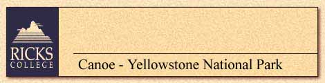
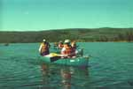

|
 |
Sunday and Friday evenings will
be accommodated in apartment-style housing adjacent to campus or on campus.
Each apartment (3 double occupancy bedrooms-twin beds-with shared common
living room) houses maximum of 1 couple (private bath) or 3 singles (unlimited,
no charge) who share 1 bathroom. Part-time camping, Monday thru Friday,
is spent in Yellowstone’s pristine forests and emerald lakes. Amazing geysers,
hot springs, abundant wildlife and vegetation tantalize the eye. Bring
sleeping bag, ground pad, rentals available, tent provided; Maximum of
2 per tent, pit toilets. Light chores expected; No coffee, tea on campus.
No alcohol allowed: smoking prohibited. For OUTDOOR, ACTIVE HOSTELERS;
canoe 5 to 7 miles per day at 8,000 foot elevation.
Bus: Y Plane: Y Train: N Ferry: N |
| August 16-22, 1998 - $425 | Top • Back |
| CANOEING ON LEWIS
AND SHOSHONE LAKES: YELLOWSTONE'S HISTORY AND ENVIROMENT
Experience five days canoeing the shores of Lewis and Shoshone lakes in Yellowstone National Park while studying the early history of the park. Instruction will include learning how Yellowstone received its name, Indian occupancy, traders, trappers and mountain men. Observe the destruction caused by the 1988 forest fires and how nature is working in the regeneration processes. A day trip will be taken to a remote geyser basin rarely seen by the average tourist. In this restricted area of Yellowstone Park, learn by experience the importance of minimal impact camping. Food and camping gear will be transported in canoes. |
|